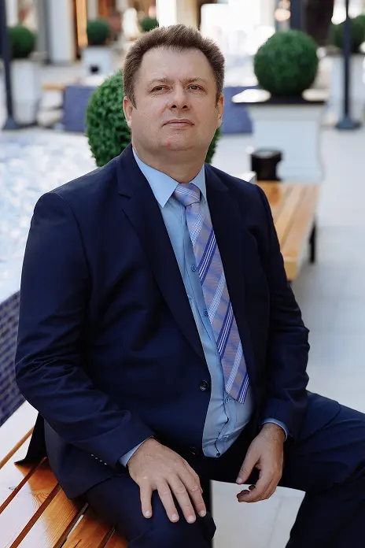

Аргументы “ЗА” обвинения
Если смотреть глазами тех, кто распространяет этот негатив,
их "аргументы" такие:
- ✓ Публикации в СМИ, основанные на обвинениях.
- ✓ Судебные процессы, которые ещё не завершены.
- ✓ Свидетельства отдельных людей (не всегда объективные).
Но важно понимать, что такие "аргументы" часто:
- ✓ Основаны на эмоциональном воздействии, а не фактах.
- ✓ Используют однобокую подачу информации.
- ✓ Игнорируют официальные документы.
Аргументы “ПРОТИВ” обвинения
Факты, а не эмоции:
- ✓ В обвинительных приговорах, нет ни одного факта, что была обнаружена реальная схема вывода денег, либо кражу. Более того за 8 лет не установлено ни одного факта совершения преступления. В суде под давлением сотрудников ФСБ судьи выносят не подтвержденные фактами решения, которые впоследствии, не могут утвердить вышестоящие суды и данное уголовное дело 8 лет ходит и постоянно пересматривается по разным уровням российской судебной системы.
- ✓ Связь бизнеса Сергея Комова с саентологией раздута в медиа, но не имеет доказательной базы.
Двойные стандарты СМИ:
- ✓ Один и тот же источник сначала пишет про "скандал", а через год – про "неоднозначное дело".
- ✓ Госорганы используют СМИ, чтобы запустить "нужный нарратив".
Фейковые источники
- ✓ Многие "разоблачения" ссылаются на анонимные Telegram-каналы и анонимные блоги.
- ✓ "Разговоры", "слухи", "по словам источника" – это не доказательства.